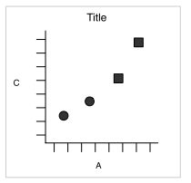
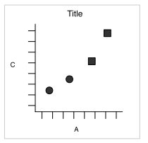

Data Visualization
Using ggplot2
BUILDING PLOTS
What is a plot?
ggplot2 uses the idea that you can build every graph from the same components:
a data set
a coordinate system
geoms - visual marks that represent data
- to display values, map variables in the data to visual properties of the geom (aesthetics) like size, color, and x and y locations
 

How to build a graph
Complete the template below to build a graph
How to build a graph
ggplot(data = mpg, aes(x = class, y = hwy))
This will begin a plot that you can finish by adding layers to.
You can add one geom per layer
Your Turn!
Change the code below to have the points on top of the boxplots.
ggplot(data = mpg, aes(x = class, y = hwy)) +
geom_jitter() +
geom_boxplot()
What is a geom?
In ggplot2, we use a geom function to represent data points, and use the geom’s aesthetic properties to represent variables.

Once our data is formatted and we know what type of variables we are working with, we can select the correct geom for our visualization.
Available Geoms
What is a layer?
it determines the physical representation of the data
Together, the data, mappings, statistical transformation, and geometric object form a layer
A plot may have multiple layers

Alternative method of building layers: Stats
A stat builds a new variable to plot (e.g., count and proportion)


Faceting
A way to extract subsets of data and place them side-by-side in graphics
ggplot(data = mpg, aes(x = cty, y = hwy, colour = class)) +
geom_point()ggplot(data = mpg, aes(x = cty, y = hwy, colour = class)) +
geom_point() +
facet_grid(~class) #<<
Faceting Options
facet_grid(. ~ b): facet into columns based on bfacet_grid(a ~ .): facet into rows based on afacet_grid(a ~ b): facet into both rows and columnsfacet_wrap( ~ fl): wrap facets into a rectangular layout
You can set scales to let axis limits vary across facets:
facet_grid(y ~ x, scales = "free"): x and y axis limits adjust to individual facets- “free_x” - x axis limits adjust
- “free_y” - y axis limits adjust
You can also set a labeller to adjust facet labels: - facet_grid(. ~ fl, labeller = label_both) - facet_grid(. ~ fl, labeller = label_bquote(alpha ^ .(x))) - facet_grid(. ~ fl, labeller = label_parsed)
Position Adjustments
Position adjustments determine how to arrange geoms that would otherwise occupy the same space - Dodge: Arrange elements side by side - Fill: Stack elements on top of one another, normalize height - Stack: Stack elements on top of one another
ggplot(mpg, aes(fl, fill = drv)) +
geom_bar(position = "")` #<<
Position Adjustments: Jitter
- Jitter: Add random noise to X & Y position of each element to avoid overplotting
- There is also a jitter geom

Coordinate Systems
coord_cartesian(): The default cartesian coordinate systemcoord_fixed(): Cartesian with fixed aspect ratio between x & y unitscoord_flip(): Flipped Cartesian coordinatescoord_polar(): Polar coordinatescoord_trans(): Transformed cartesian coordinates.coord_map(): Map projections from the mapproj package (mercator (default), azequalarea, lagrange, etc.)

Maps
Maps
Plotting geospatial data is a common visualization task, and one that requires specialized tools.
Typically the problem can be decomposed into two problems:
using one data source to draw a map
adding metadata from another information source to the map
Example: Nebraska Population
Map Source Data
ne_counties <- map_data("county", "nebraska")| long | lat | group | order | region | subregion |
|---|---|---|---|---|---|
| -98.72636 | 40.69719 | 1 | 1 | nebraska | adams |
| -98.29664 | 40.69719 | 1 | 2 | nebraska | adams |
Population Data
ne_population <- read.csv("https://raw.githubusercontent.com/unl-statistics/R-workshops/main/r-graphics/data/nebraska-population.csv")| subregion | population |
|---|---|
| adams | 31205 |
| antelope | 6295 |
Example: Nebraska Population
ggplot(ne_data) +
geom_polygon(aes(x = long, y = lat, group = group, fill = log(population)), color = "black") +
coord_map() +
theme_void() +
scale_fill_gradient(low = "white", high = "green4")
ggplot2 extenstions
library(ggforce)
library(ggforce)
ggplot(iris, aes(Petal.Length, Petal.Width, colour = Species)) +
geom_point() +
facet_zoom(x = Species == 'versicolor') #<<
library(ggvoronoi)

library(ggridges)

library(ggrepel)

library(patchwork)

ggplot2 extensions
Check out slides for some frequently used extensions by Ashirwad Barnwal HERE.